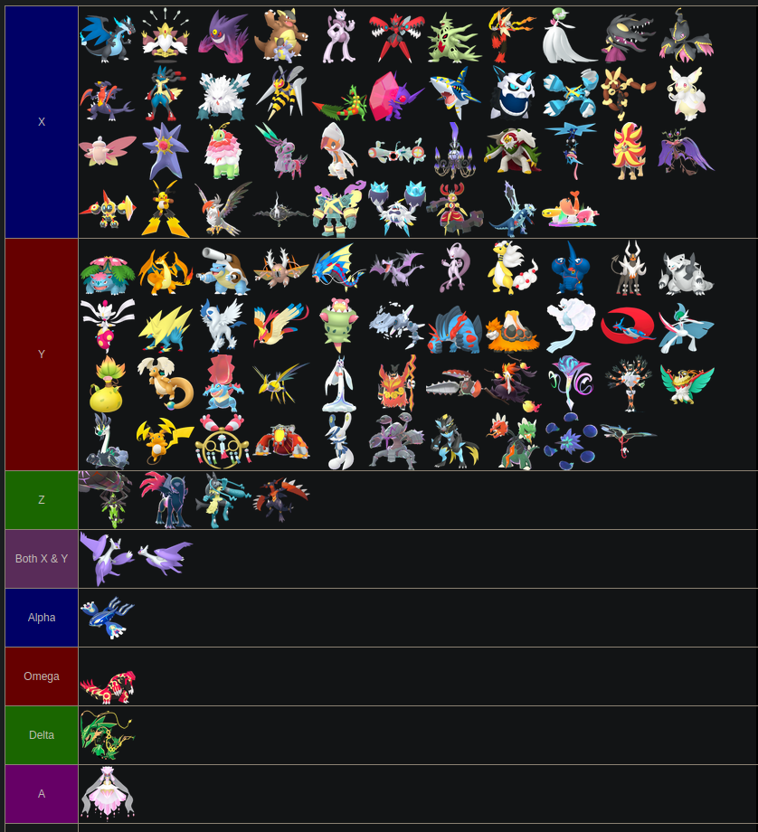
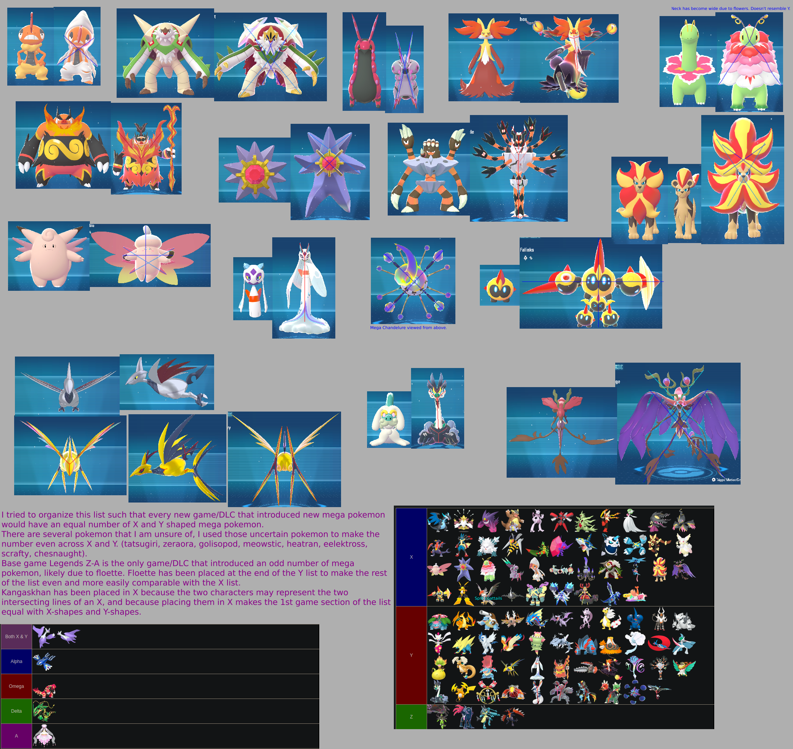

Pokémon Legends: Z-A: Mega X and Y Shapes Analysis
I'm a big fan of TAHK0's video "Almost all Mega Pokemon are X and Y shaped". TAHK0 is planning on uploading a new video that goes over each new Mega Evolution introduced in Legends Z-A and Mega Dimensions, but I still did my own shapes analysis of the new Megas anyway just for fun.
I noticed something about the shapes of Megas that I'm not sure TAHK0 has noticed yet. Near the end of his video, TAHK0 showed a list of all mega pokemon organized by what letter they're designed after. The only Mega Pokémon that TAHK0 couldn't figure out if it was X or Y shaped was Mega Kangaskhan, but when I was looking at the list I noticed that if you remove the three Legends Z-A megas that had recently been revealed, the number of X-shaped Mega Pokémon and the number of Y-shaped Mega Pokémon were almost exactly the same. The number of X-shaped Megas was only one less than the number of Y-shaped Megas.
I then realized that, if you assume that Mega Kangaskhan is X-shaped and place it in the X row of the list, then the number of X-shaped and Y-shaped Megas introduced in generation 6 becomes completely equal.
This equality also extends to the number of X and Y shaped Megas introduced specifically in Pokémon X & Y, and the Megas introduced in Omega Ruby and Alpha Sapphire.
After I realized this, I thought it would be interesting to categorize all of the Megas introduced in Legends Z-A and Mega Dimensions with the assumption that there must be an equal number of X and Y megas for each "batch" of new Mega Evolutions.
Here's a "tier list" that organizes every single Mega Evolution by letter. I used TAHK0's tier list as a base. The visual tier list was made using this tier list maker.

I also made this large image to organize my thoughts and visually demonstrate the X and Y motifs of some of the Legends Z-A Mega Evolutions. Please zoom into the image to view all the detail.

This image contains some text embedded within; the text is as follows:
I tried to organize this list such that every new game/DLC that introduced new mega pokemon would have an equal number of X and Y shaped mega pokemon.
There are several pokemon that I am unsure of, I used those uncertain pokemon to make the number even across X and Y. (tatsugiri, zeraora, golisopod, meowstic, heatran, eelektross, scrafty, chesnaught).
Base game Legends Z-A is the only game/DLC that introduced an odd number of mega pokemon, likely due to floette. Floette has been placed at the end of the Y list to make the rest of the list even and more easily comparable with the X list.
Kangaskhan has been placed in X because the two characters may represent the two intersecting lines of an X, and because placing them in X makes the 1st game section of the list equal with X-shapes and Y-shapes.
I hope you enjoyed reading this!